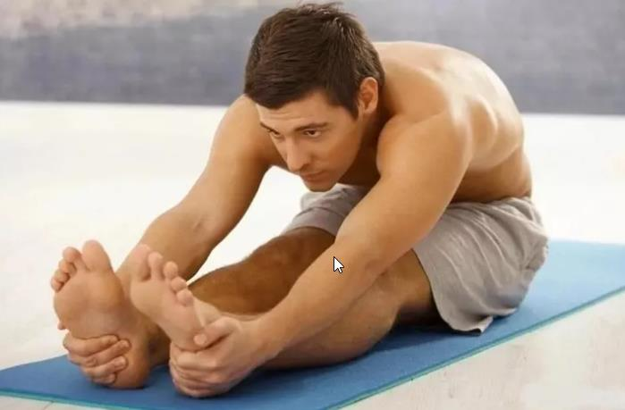
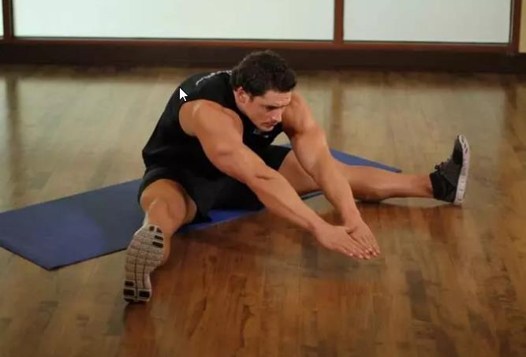
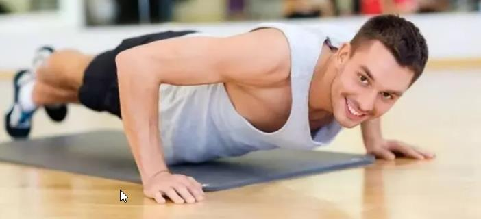
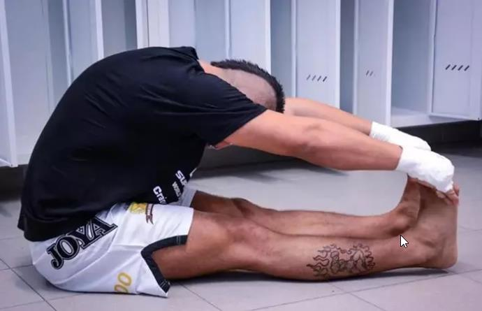

Упражнения на растяжку для мужчин
Почему-то считается, что растяжка — это прерогатива женщин. Но между тем для мужчин стретчинг тоже полезен. Он помогает получить максимальный эффект от тренировок, избавит от усталости и улучшит половое здоровье. Расскажем, какие упражнения на растяжку стоит выполнять мужчинам.
Внимание! Материал носит лишь ознакомительный характер. Не следует прибегать к описанным в нем методам лечения без предварительной консультации с врачом.
О пользе растяжки для мужчин
Занятия спортом играют весьма важную роль в жизни человека. Именно благодаря регулярным физическим нагрузкам все внутренние процессы протекают в нормальном режиме, а организм остаётся крепким и здоровым на протяжении многих лет. Здоровый образ жизни и активное времяпрепровождение с каждым днём становятся всё популярнее, всё больше людей посещают спортзалы и следят за своим рационом. Однако мало кто задумывается о том, что для организма важна не только физическая нагрузка, но и периодическая растяжка мышц. Чтобы получить максимальный эффект от тренировок, необходимо чередовать силовые нагрузки с растяжкой. Не смотря на то, что гибкость – это в большей степени критерий женской красоты, стретчингом активно занимаются и мужчины. Стретчинг – комплекс упражнений, основная задача которого направлена на развитие гибкости и подвижности. Но у многих мужчин возникнет вопрос: зачем он нам нужен? Всем известный велогонщик Армстронг, отмечал, что стретчинг непосредственно влияет: на выносливость (благодаря которой, мышцы после физических нагрузок восстанавливаются значительно быстрее), на суставы (их возможности значительно увеличиваются), также стретчинг используют после получения травм в реабилитационных целях. Стоит отметить, данный вид занятий включен в тренировочный процесс профессиональных спортсменов. А ведь заметьте, что среди них как женщины, так и мужчины. Научиться растягиваться может каждый, независимо от возраста или гибкости тела. Для этого не нужно находиться на пике физического развития или обладать особыми спортивными навыками. Сидите ли вы целый день в кабинете или копаете землю, занимаетесь работой по дому, водите автомобиль или регулярно бегаете по утрам, вам всем подойдут одни и те же приемы растягивания. Упражнения выполняются легко и плавно, в соответствии с индивидуальным уровнем напряженности и гибкости мышц. Поэтому, если вы здоровы и не испытываете никаких физических проблем, то сумеете научиться растягиванию без всякого риска и с удовольствием.
Польза растяжки.
Как уже было сказано ранее, растяжка необходима для увеличения эффективности силовой тренировки. Всё дело в том, что мышцы, подвергаясь интенсивной физической нагрузке, перенапрягаются и перегреваются, что делает их более жёсткими и заставляет укорачиваться. В результате мышцы становятся менее эластичными, что существенно сокращает амплитуду движений и снижает эффективность тренировки, а также может привести к травмам из-за уменьшения подвижности суставов. Растяжка помогает избавиться от болей в спине и пояснице, она улучшает осанку и избавляет от мышечных болей, которые появляются после интенсивной тренировки. Благодаря увеличению эластичности мышц, ускоряется кровообращение, а, следовательно, все внутренние органы и ткани получают достаточное количество кислорода и питательных веществ, что положительно влияет на их состояние и работу. Люди, постоянно делающие растяжку мышц, всегда пребывают в приподнятом расположении духа и хорошем настроении, так как их мышцы находятся в постоянном тонусе. Также следует упомянуть о том, что растяжка положительно влияет на координацию движений и позволяет нормализовать кровяное давление. Одним словом, если вы хотите, чтобы ваш организм был здоровым, не забывайте включать растяжку в комплекс обязательных упражнений.
Растягивание дает мозгу возможность расслабиться и восстанавливает ритм вашего тела, поэтому оно должно стать частью вашей повседневной жизни. Регулярное растягивание приносит много пользы:
- уменьшает мышечную напряженность и заставляет тело расслабиться;
- развивает координацию, позволяет двигаться свободнее и легче;
- расширяет диапазон доступных движений;
- помогает предотвратить такие травмы, как растяжение мышц (сильная, гибкая, разогретая мышца лучше выдерживает напряжение, чем сильная, жесткая и не растянутая);
- подготавливает вас к физической активности и облегчает занятия, связанные с большими нагрузками; это своеобразный способ предупредить мышцы о предстоящем испытании;
- помогает поддерживать гибкость вашего тела и препятствует уменьшению подвижности суставов;
- учит вас ощущать свое тело: растягивая различные части тела, вы концентрируете на них свое внимание и устанавливаете с ними мысленный контакт, таким образом постепенно познавая себя;
- обеспечивает хорошее самочувствие.
Мышечный тонус.
При занятиях стретчингом мышцы становятся заметно эластичнее, лучше снабжаются кислородом за счет активизации кровотока. Статические тренировки на растяжку позволяют прочувствовать работу каждой мышцы, контролируя напряжение, увеличивая свою работоспособность. Вы научитесь лучше владеть своим телом.
Польза стретчинга для мышц:
- стретчинг разогревает мышцы, что убережет вас от травм (растяжение, микроразрывы мышечных волокон);
- такие занятия запустят обмен веществ в мышцах;
- напряжение сменится статичным тонусом;
- если используете стретчинг после основной тренировки, он поможет снять усталость, вернуть волокнам прежнее состояние, уменьшит болевые ощущения после силовых нагрузок.
Крепкие связки и суставы – мечта спортсмена.
Связочный и суставной аппараты скажут вам спасибо за то, что вы записались на уроки стретчинга. Сухожилия станут более выносливыми, что априори снижает вероятность возникновения травм. Также тело станет устойчивее к нагрузкам, будет быстрее восстанавливаться после них. Амплитуда и диапазон движений суставов заметно возрастет, стретчинг также защитит ваше тело от безвременного старения – профилактика отложения солей, развития артритов, артрозов и т.д. Стретчинг спасет вас от гиподинамии, улучшит осанку и усилит любовь к жизни. После этих занятий вы заново увидите свое тело, полюбите его и узнаете, на что оно способно на самом деле.
Растяжка ног в домашних условиях:
Растяжка важна для мужчин. Не стесняйтесь выполнять упражнения после основной силовой тренировки: это путь к красивому рельефу и эластичным мускулам. Если не занимаетесь спортом, все равно не игнорируйте растяжку. Она влияет на выносливость, здоровье суставов и уменьшает риск возникновения травм. Растяжка поможет избавиться от любых болей и улучшит настроение. Особенно стретчинг важен для мужчин, у которых сидячая работа. Растяжка ног помогает снять напряжение в тазовом отделе, улучшает кровообращение и снимает боли в спине. Показана мужчинам в любом возрасте.
Начать растягиваться может каждый человек, независимо от физической подготовки и сферы деятельности. Возьмите за правило выполнять упражнения хотя бы пару раз в неделю. Расскажем, какие упражнения для растяжки ног можно выполнить в домашних условиях:
Колено к груди.
Станьте ровно. Обхватите правую ногу руками и медленно подтяните к груди. Замрите на 30 секунд. Затем отведите ногу назад, схватившись руками за пятку, и держите позу 30 секунд. Повторите с другой ногой.
«Лягушка».
Сядьте на коврик, согните ноги в коленях. Стопы на полу. Максимально разведите колени, стараясь положить их на пол. Можете слегка надавить на ноги локтями. Делайте упражнение в динамике или в статике. Задержитесь в таком положении 30–45 секунд.
«Лягушка» лежа.
Принцип упражнения тот же. Только на этот раз лягте на спину. Удерживайтесь в положении 30–50 секунд.
Поперечный шпагат.
Сядьте на пол, максимально раздвиньте ноги в стороны. Наклоните корпус и тянитесь вперед, стараясь животом достать до пола.
Кольцо.
Сделайте выпад на правую ногу, как в предыдущем упражнении. Затем положите левую ногу на пол, согните ее в колене и возьмитесь за носок противоположной рукой. Корпус поверните вправо. Замрите на 30 секунд и измените положение ног.
Упражнения на растяжку: советы для мужчин
Как и к любому спорту, к стретчингу нужно подходить с умом. Чаще всего в стретчинге используют две техники — это динамика и статика. Для первого способа характерна небольшая мягкая амплитуда движений, например вытягивания рук вперед при растяжке в поперечном шпагате. При статике положение тела неподвижно. Воспользуйтесь такими советами, которые помогут получить максимальный эффект от растяжки и избежать травм:
Разминайтесь.
Разогрев мышц — обязательное условие при выполнении растяжки. Если вы только что закончили тренировку, тогда разминка не нужна. Если же приступили к стретчингу в свободное время, хорошо разогрейте мышцы. Для этого уделите время разминке и небольшой кардионагрузке. Время тренировки — не менее 15 минут.
Не переоценивайте силы.
Главное в растяжке — медленная техника выполнения. Поэтому не стремитесь сразу максимально раздвигать ноги, иначе травмы неизбежны. При выполнении упражнений можете чувствовать только легкое напряжение мышц, но не боль.
Не делайте резких движений.
Растяжку для начинающих выполняйте плавно, без рывков. Хотите сделать упражнение в динамике? Следите за мягкостью и амплитудой движений.
Контролируйте время..
Для максимального результата растяжки удерживайтесь в одной позе не меньше 30 секунд. С каждой тренировкой увеличивайте время на 5 секунд.
Правильно дышите..
Многие, выполняя упражнения, забывают о дыхании. Это неправильно. Дышите носом, равномерно и глубоко.
Занимайтесь регулярно.
Если думаете, что сможете растянуться за неделю, то спешим вас огорчить: это невозможно. Чтобы достичь ощутимого результата, потребуется минимум месяц. И то при условии регулярных занятий — 3–4 раза в неделю по 15–20 минут. Кроме растяжки ног, уделите время и другим видам стретчинга.